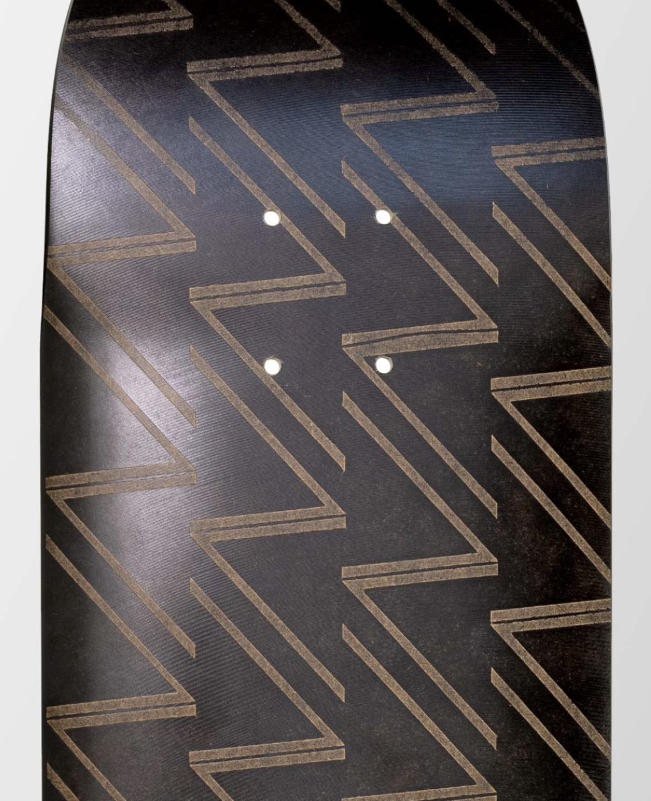

€40.3M
EU Innovation Fund support
100%
Biogenic and fossil-carbon-free material; company-stated
23.000 t
Planned annual capacity at full ramp-up
The opportunity
Replace conventional packaging with renewable materials.
Papershell aims to replace fossil-based plastics, aluminium and glass-fibre composites with a high-performance biobased material.
The opportunity is to make lower-impact materials viable in demanding industrial applications, not just niche sustainable products.

Material Substitution
Replace selected fossil-based and metal components while meeting design and performance requirements.
Design + engineering
Work with industrial customers to validate real products, not just material samples.
Industrial scale
A modular, flexible production system is designed to serve several sectors.
Why it works
Design appeal only matters if the material works in industry.
Papershell’s proposition combines material performance, attractive design and a production system that can adapt across applications.
The potential advantage is not biobased content alone: it is a material customers can use, manufacturers can produce, and recovery systems may be able to handle.
Bankability indicators
Industrialise a renewable packaging platform.
Scaling depends on consistent material performance, efficient production and partnerships with customers ready to transition packaging systems.
01 Meet product-protection needs
02 Scale efficient fibre production
03 Enable circular recovery

Packaging designed to perform, with renewable materials at its core.